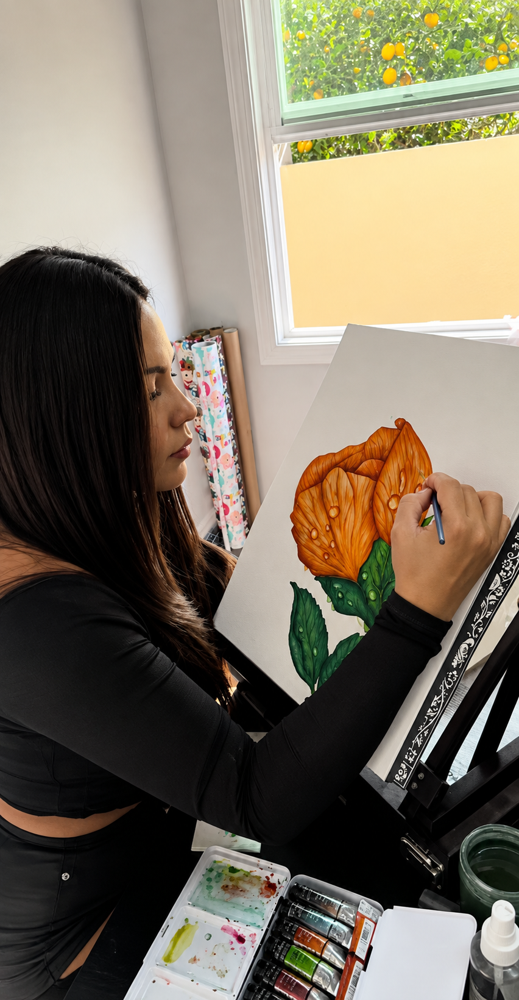

Soy una artista colombiana apasionada por las formas y los colores, especialmente aquellos que la naturaleza plasma a su manera; realmente pienso que son magia viva. Mi inspiración nace de observar el mundo natural: el mar, los árboles, los animales y las flores, con toda la riqueza de tonos y matices que cada uno guarda. Encuentro en esos detalles una fuente inagotable de ideas para mi trabajo. Llevo 6 años dedicada a la pintura, y soy especialmente apasionada por la acuarela, que me permite jugar con la transparencia y la espontaneidad del color. Sin embargo, disfruto mucho explorar y aprender otras técnicas y materiales: acrílico, óleo, óleo pastel, lápices de colores y tinta, cada uno con su propio lenguaje y posibilidades. Esta constante experimentación es parte de lo que mantiene vivo mi proceso creativo.
